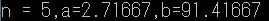
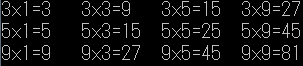
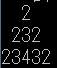

import java.util.Random;
public class Exam1_51{
public double nat_51a(int n){
double a = 1;
double y = 1;
for( int x = 1; x <= n; x++){
y = y * x; //分母n!
a = a + 1 / y;} //(a)題目的值
return a;}
public double nat_51b(double n){
double b = 1;
double y = 1;
double z;
for( int x = 1; x <= n; x++){
y = y * x;
z = Math.pow(n,x); //分子的n次方
b = b + z / y;} //(b)題目的值
return b;}
// **** overloaded methods 部分
public static void main( String args[] ){
Random randomNumbers = new Random();
int n = 5 + 1 * randomNumbers.nextInt(6);
Exam1_51 A = new Exam1_51();
A.nat_51a(n);
A.nat_51b(n);
if( n%2 == 1){
System.out.printf("n = %d,a=%.5f,b=%.5f", n, A.nat_51a(n), A.nat_51b(n));}
else if( n%2 == 0){
System.out.printf("n = %d,b=%.5f,a=%.5f", n, A.nat_51b(n), A.nat_51a(n));}
// **** 產生隨機變數及呼叫 overloaded methods
} // end main
} // end class

public class Exam2_51{
public static void main( String args[] ){
for (int i = 3; i <= 9; i = i+2){
if (i == 7) //跳過7
continue;
for (int j = 1; j <= 9; j = j + 2){
if (j == 7)
continue;
System.out.printf("%dx%d=%d\t", i, j, i * j);}
System.out.println();}
} // end main
} // end class

public class Exam3_51{
public static void main(String args[]){
for ( int a = 2; a <= 4; a++){ //a是行數
for ( int b = 1; b <= 4-a; b++)
System.out.printf(" ");
for ( int b = 1; b <= a-1; b++)
System.out.printf("%d", b+1);
for ( int b = 1; b <= a-2; b++)
System.out.printf("%d",a-b);
System.out.println("");}//印空白列換行
}// end main
}// end class